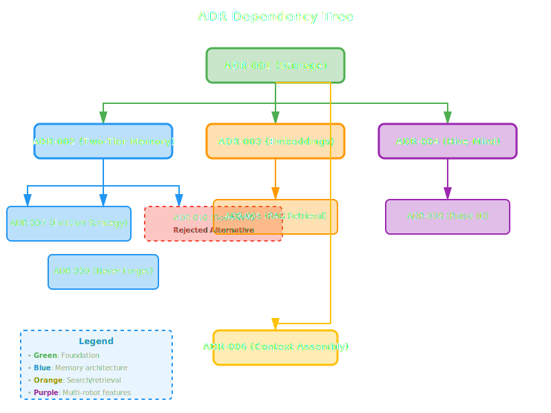

Architecture Decision Records (ADRs)¶
Introduction¶
Architecture Decision Records (ADRs) document significant architectural decisions made during the development of HTM (Hierarchical Temporal Memory). Each ADR captures the context, decision, rationale, and consequences of important design choices.
What are ADRs?¶
Architecture Decision Records are lightweight documents that capture important architectural decisions along with their context and consequences. They serve as a historical record of why decisions were made, helping current and future developers understand the system's design.
Key Benefits¶
- Historical Context: Understand why decisions were made
- Knowledge Transfer: Onboard new team members faster
- Decision Tracking: See how the architecture evolved over time
- Avoid Revisiting: Prevent rehashing settled decisions
ADR Structure¶
Each ADR follows a consistent structure:
- Status: Current state (Accepted, Proposed, Deprecated, Superseded)
- Date: When the decision was made
- Decision Makers: Who participated in the decision
- Quick Summary: TL;DR of the decision
- Context: Background and problem statement
- Decision: What was decided
- Rationale: Why this decision was made
- Consequences: Positive, negative, and neutral outcomes
- Alternatives Considered: What other options were evaluated
- References: Related documentation and resources
ADR Status Legend¶
| Status | Meaning |
|---|---|
| Accepted | Decision is approved and implemented |
| Proposed | Decision is under consideration |
| Rejected | Decision was considered but not adopted |
| Deprecated | Decision is no longer recommended |
| Superseded | Decision has been replaced by another ADR |
How to Read ADRs¶
- Start with Quick Summary: Get the high-level decision quickly
- Read Context: Understand the problem being solved
- Review Decision and Rationale: See what was chosen and why
- Consider Consequences: Understand trade-offs and implications
- Check Alternatives: See what else was considered
Complete ADR List¶
ADR-001: PostgreSQL with TimescaleDB for Storage¶
Status: Accepted | Date: 2025-10-25
PostgreSQL with TimescaleDB extension chosen as the primary storage backend, providing time-series optimization, vector embeddings, full-text search, and ACID compliance in a single database system.
Key Decision: Use PostgreSQL + TimescaleDB instead of specialized vector databases or multiple storage systems.
Read more: ADR-001: PostgreSQL with TimescaleDB
ADR-002: Two-Tier Memory Architecture¶
Status: Accepted | Date: 2025-10-25
Implementation of a two-tier memory system with token-limited working memory (hot tier) and unlimited long-term memory (cold tier) to manage LLM context windows while preserving all historical data.
Key Decision: Separate fast working memory from durable long-term storage with RAG-based retrieval.
Read more: ADR-002: Two-Tier Memory Architecture
ADR-003: Ollama as Default Embedding Provider¶
Status: Accepted | Date: 2025-10-25
Ollama with the gpt-oss model selected as the default embedding provider, prioritizing local-first, privacy-preserving operation with zero API costs while supporting pluggable alternatives.
Key Decision: Local embeddings by default, with support for cloud providers (OpenAI, Cohere) as options.
Read more: ADR-003: Ollama Default Embedding Provider
ADR-004: Multi-Robot Shared Memory (Hive Mind)¶
Status: Accepted | Date: 2025-10-25
All robots share a single global memory database with attribution tracking, enabling seamless context sharing and cross-robot learning while maintaining individual robot identity.
Key Decision: Shared global memory instead of per-robot isolation, with attribution via robot_id.
Read more: ADR-004: Multi-Robot Shared Memory
ADR-005: RAG-Based Retrieval with Hybrid Search¶
Status: Accepted | Date: 2025-10-25
Three search strategies implemented (vector, full-text, hybrid) with temporal filtering, allowing users to choose the best approach for their query type while combining semantic understanding with keyword precision.
Key Decision: Hybrid search as default, combining full-text pre-filtering with vector reranking.
Read more: ADR-005: RAG-Based Retrieval
ADR-006: Context Assembly Strategies¶
Status: Accepted | Date: 2025-10-25
Three context assembly strategies (recent, important, balanced) for selecting which memories to include when token limits prevent loading all working memory, with balanced as the recommended default.
Key Decision: Multiple strategies for different use cases, with importance-weighted recency decay as default.
Read more: ADR-006: Context Assembly Strategies
ADR-007: Working Memory Eviction Strategy¶
Status: Accepted | Date: 2025-10-25
Hybrid eviction policy combining importance and recency scoring, evicting low-importance older memories first while preserving all data in long-term storage (never-forget principle).
Key Decision: Eviction moves to long-term storage, never deletes. Primary sort by importance, secondary by age.
Read more: ADR-007: Working Memory Eviction
ADR-008: Robot Identification System¶
Status: Accepted | Date: 2025-10-25
Dual-identifier system using UUID v4 for unique robot_id plus optional human-readable robot_name, with automatic generation if not provided and comprehensive robot registry tracking.
Key Decision: UUID for uniqueness, name for readability, auto-generation for convenience.
Read more: ADR-008: Robot Identification
ADR-009: Never-Forget Philosophy with Explicit Deletion¶
Status: Accepted | Date: 2025-10-25
Never-forget philosophy where memories are never automatically deleted, eviction only moves data between tiers, and deletion requires explicit confirmation to prevent accidental data loss.
Key Decision: Permanent storage by default, deletion only via forget(confirm: :confirmed).
Read more: ADR-009: Never-Forget Philosophy
ADR-010: Redis-Based Working Memory (Rejected)¶
Status: Rejected | Date: 2025-10-25
Proposal to add Redis as a persistent storage layer for working memory was thoroughly analyzed and rejected. PostgreSQL already provides durability, working memory's ephemeral nature is by design, and Redis would add complexity without solving a proven problem.
Key Decision: Keep two-tier architecture with in-memory working memory. Trust PostgreSQL for durability. Apply YAGNI principle.
Why Rejected: Unnecessary complexity, performance penalty, operational burden, and no proven requirement. PostgreSQL already handles multi-process sharing and crash recovery.
Read more: ADR-010: Redis Working Memory (Rejected)
ADR Dependencies¶

Related Documentation¶
Contributing to ADRs¶
When making significant architectural decisions:
- Create a new ADR using the next sequential number
- Follow the established structure and format
- Include thorough context, rationale, and consequences
- Document alternatives considered and why they were rejected
- Update this index with a summary
- Link related documentation
Questions?¶
For questions about architectural decisions, please:
- Review the specific ADR documentation
- Check the related guides and API documentation
- Open a GitHub issue for clarification
- Consult the development team